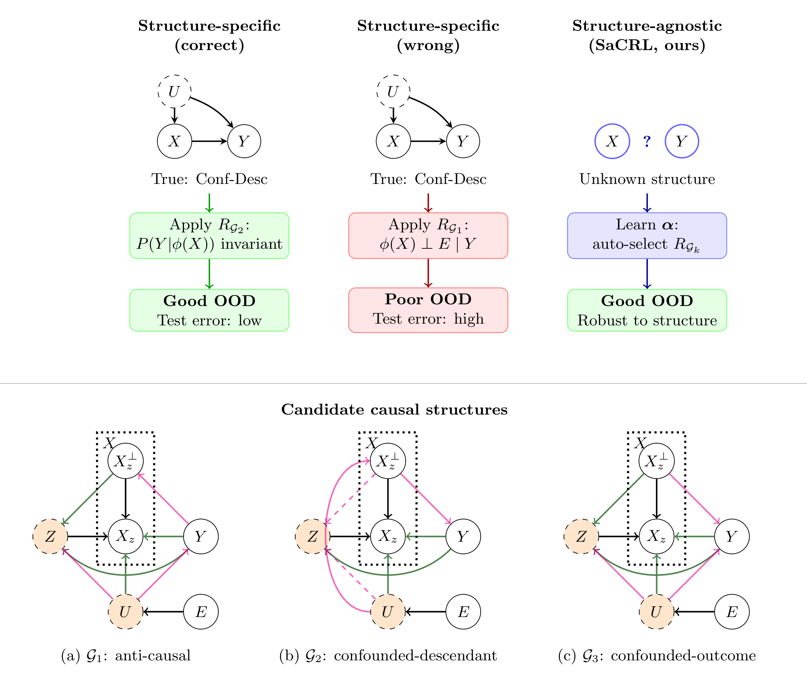

SaCRL: Structure-agnostic Causal Representation Learning
Illinois Institute of Technology

Abstract
Causal representation learning aims to discover robust features by exploiting the causal structure underlying data generation. Existing methods require specifying the causal structure a priori, yet different structures demand fundamentally incompatible invariance constraints, and misspecification leads to representations that discard predictive information. We introduce SaCRL, a framework that jointly identifies which of three canonical causal structures generated the data and learns the corresponding invariant representation without prior structural knowledge. Our approach formulates structure selection as a soft optimization over candidate invariances using violation metrics based on the Hilbert–Schmidt independence criterion (HSIC), with adaptive weights that automatically concentrate on the achievable structure. We provide theoretical guarantees for structure identification (also under random-feature approximation), invariance satisfaction, and out-of-distribution generalization. Empirically, SaCRL recovers the true structure in most runs on synthetic and semi-synthetic Bayesian-network benchmarks, outperforms fixed-invariance baselines on Colored MNIST, achieves the best accuracy among the compared objectives on three DomainBed benchmarks (PACS, VLCS, OfficeHome) with a frozen backbone, and outperforms ERM under structural misspecification and limited environment diversity.
BibTeX
@inproceedings{behnam2026sacrl,
title = {Structure-agnostic Causal Representation Learning},
author = {Behnam, Arman and Wang, Binghui},
booktitle = {Advances in Neural Information Processing Systems (NeurIPS)},
year = {2026}
}